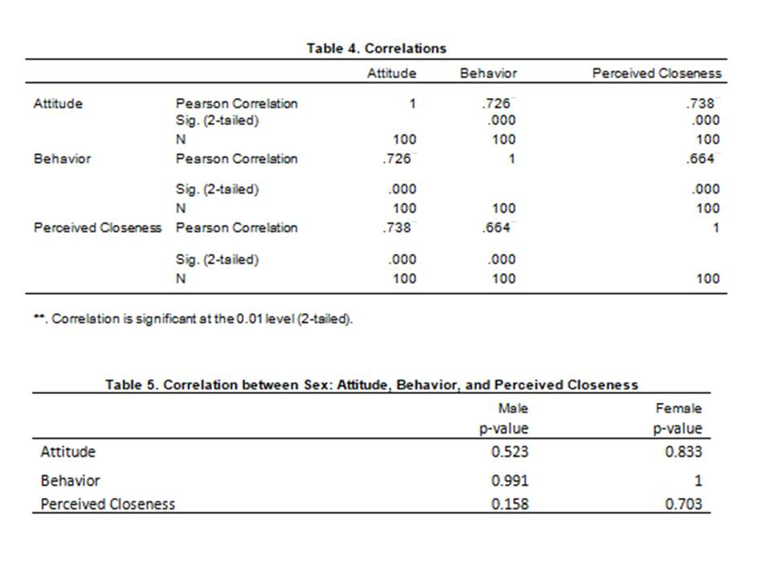
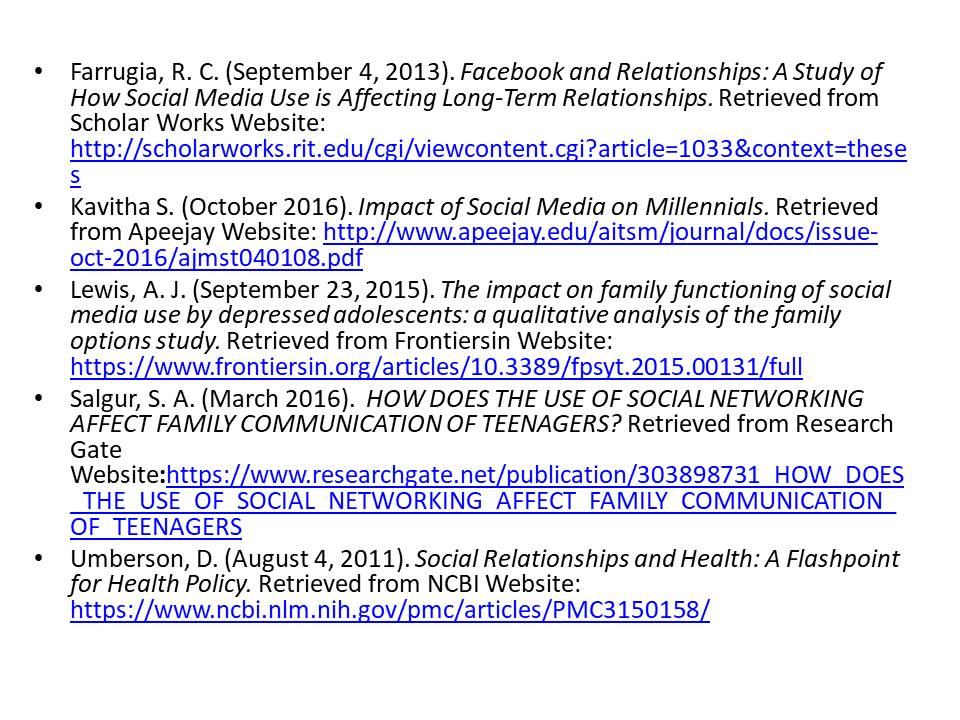

"The Influence of the use of social media affecting the quality of family relationships"
Team STEM01 from Grade 11
members:Camagay,Chacon, Borja, Namoro
Social media has been widely known as to connect each other. There have been various of sites and applications of social media, such as these logos seen on the screen
However, people have been observed to be addicted or attached to their social media accounts that they tend to forget the meaning of “socialize” or “socialization”

Up to the extent that, the quality of family relationships have been affected.
Null Hypothesis: There is no relationship between Perceived closeness and Behavior. Alternative: There is a relationship between Perceived closeness and Behavior. Null Hypothesis: There is no relationship between Attitude and Behavior. Alternative Hypothesis: There is a relationship between Attitude and Behavior. Null Hypothesis: There is no relationship between Attitude and Perceived closeness. Alternative Hypothesis: There is a relationship between Attitude and Perceived closeness.
Our research utilized Quantitative Research; therefore we gather data through linear range surveys or questionnaire. This research was conducted online with Google forms. We used survey questionnaires with linear range: 1 – Strongly Disagree 2 – Disagree 3 – Neutral 4 – Agree 5 – Strongly Agree to 100 respondents through Google forms There are 45 questions in the survey questionnaire, we categorize them according to: Behavior, Attitude, and Perceived Closeness

Pearson correlation revealed a statistically high positive correlation between attitude and behavior (r=0.726; p=0.000), attitude and Perceived Closeness (r=0.738; p=0.000), and behavior and perceived closeness (r=0.664; p=0.000). Perceived Closeness, Attitude, Behavior : SIGNIFICANT
Our survey questionnaire focused on the positive side of the relationship between perceived closeness of family relationship, attitude, and behavior towards social media. Social media is not used by family members to express their love for their family .The use of social media helps families a lot in communicating, especially those who are away with their family members. However, it takes most of our time resulting to the lessening the time we are supposed to give to our family members. The likes and posts of family pictures, celebrations, and greetings on social media do not determine the quality of family relationship. Social media do not let family members feel closer to their family however it also do not destroy the quality of family relationships. Confidential things are kept between family members, and feelings must be expressed personally not through social media in order to have strong and better family relationships. Through the data analysis tables given, we have found out that perceived closeness of family relationship, attitude, and behavior towards the use of social media relates to each other.
Our research will be highly recommended and helpful for people who are fond of using social media; this may help raise awareness to have discipline when using the social media. For further research, we recommend that they may research on the negative sides since our study focuses on the positive side, also, for further research comparing or the comparison between use of social media on friendly relationships and family relationships.
